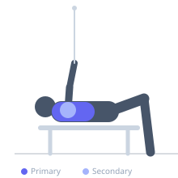

Exercise guide / High-to-Low Cable Fly
High-to-Low Cable Fly
The high-to-low cable fly is performed with the cable pulleys set at the highest position, with the arms arcing downward and inward. This downward adduction path matches the line of pull of the sternal (lower) pectoralis major fibers, making this variation particularly effective for lower chest development. Constant cable tension provides loading through the full range of motion.
Primary muscles
pectoralis major sternal
Secondary muscles
pectoralis major clavicular
deltoid anterior
pectoralis minor
Stabilizers
supraspinatus
brachialis
Equipment
Cable Machine (Dual Pulley / Functional Trainer)
Optional
Cable Machine (High Pulley)


Starting position
- Set both cable pulleys to the highest position. Grasp the handles and step forward so the cables pull from above. Stand tall or stagger your stance slightly. Arms begin high and wide with a slight elbow bend.
Setup
- Set both cable pulleys to the topmost position. Attach single-handle D-ring attachments. Stand between the stacks and step forward far enough to feel tension from above.
Steps
- Step 1: Set the pulleys to their highest setting. Grip the handles and step forward into the center.
- Step 2: Raise arms out wide at shoulder height or above with a fixed, slight elbow bend.
- Step 3: Exhale and arc both arms down and inward in a downward sweeping motion, meeting the handles in front of the lower torso.
- Step 4: Squeeze the lower chest at the bottom of the arc, then inhale and slowly return to the high, wide position.
Coaching cues
- Think of drawing a rainbow arc from high and wide to low and together
- Squeeze the lower chest like you are trying to crack a walnut between your pecs at the bottom
Breathing
- Exhale as you arc downward and together; inhale as you return to the high, open position.
Range of motion
- Open wide to feel the stretch at the top; bring hands to meet at or slightly below waist level for maximum lower pec contraction.
Tempo
- 2-1-2-0
Common mistakes
- Bending the elbows too much, converting the fly into a pushing movement
- Leaning excessively forward to generate momentum
Safety
- Maintain a slight, consistent elbow bend — keep the shoulder in a safe range
- Do not cross the hands aggressively past the midline if shoulder impingement is present
Training
- hypertrophy: 10–20 reps
- endurance: 15–25 reps
- hypertrophy: 3–4 sets
- endurance: 2–3 sets
- Rest: {'hypertrophy': 60, 'endurance': 45}